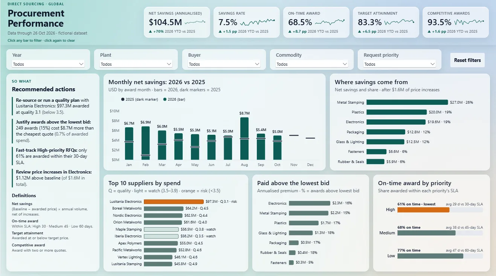

Business intelligenceBased on a Kaizen-awarded dashboard
Procurement KPI Dashboard
Where do our savings come from, and where are we leaving money on the table?
A one-page Power BI report for a sourcing team: savings by commodity, top suppliers with quality bands, premium paid above the lowest bid and a recommended-actions panel. A public replica, with fictional data, of the sourcing dashboard I built at work.
- Result of the original
- −90% report production time
- Replaced
- A manual sourcing status report
- Power BI
- DAX
- Power Query
- Deneb / Vega-Lite
- WCAG 2.1 AA
